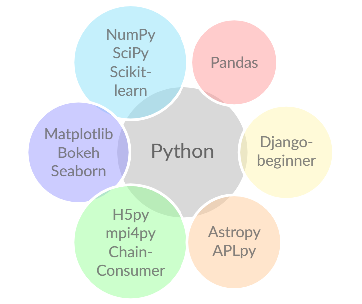

I am a Data Scientist and Astrophysicist
Obtained PhD in Astrophysics from Swinburne University, Centre for Astrophysics and Supercomputing. I have 4 years of active research experience in data processing, analysis and visualisation.
Internship at ADACS (Astronomy Data and Computing Services)
During the internship I led development of a dynamical and interactive visualisation (using python and bokeh) and presented/discussed progress with stakeholders. In addition, I was involved in web development with Django within a professional software development environment. Full project description can be found here.Most used Python libraries
1st place at #DigitalDefence Hack 2020
21/22nd September 2020, I was a team captain at Hackmakers #DigitalDefence Hackathon. As a team, we have successfully detected anomalies (fraud activities) within bank transactions and received 1st place. Tools used: Python, NEO4j, Tableau and Graphistry. Video presentation can be found here.Hackmakers #DigitalDefence 2020: Winner Certificate
Awarded: Dec 18, 2020
Awarded To: Robert Dzudzar